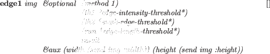
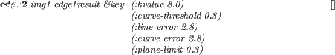
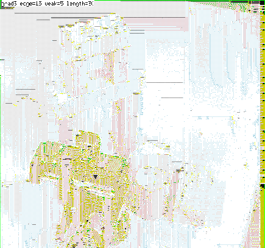

エッジ抽出機能は、"vision/edge/edge"に実現されている。

-
- imgのエッジピクセルを抽出する。
edge1は、まずすべてのピクセルに微分オペレータを適用する。
次の3つの微分オペレータが用意されている。
grad3は、縦と横の隣接ピクセルの差を用いる。
prewittは、grad3に斜め方向のピクセルを考慮したものである。
sobelは、prewittにおいて横と縦のピクセルに重みを付けて差を計算したものを用いる。
methodが0,1のときgrad3、2のときprewitt、3のとき
sobelを選択する。
th1より大きな輝度を持つエッジピクセルが強いエッジピクセルとして
指示される。
薄いエッジはエッジの輝度と微分方向を参照した後、独立したピクセルに付けられる。
これらの強いエッジの端から、強いエッジの方向に含まれる弱いエッジを捜し、
線分を延長する。
th2より大きなエッジ輝度を持つ弱いエッジは、無条件に繋げられる。
また、th2より小さなエッジ輝度を持つかなり弱いエッジは、他のエッジ
との距離がrun以内であれば繋げられる。
edge1は、強いエッジピクセルを1、弱いエッジあるいは
延長されたエッジピクセルを2、孤立したピクセルを255と表現する
pixel-imageオブジェクトを返す。
overlay-edge ximg edgeimg [関数]
-
-
Xwindowに表示可能なpixel-imageであるximgの最上位に
edge1で得られたedgeimgを表示する。
強いエッジピクセルは赤、弱いエッジピクセルは緑、孤立したピクセルを青
で表現される。

-
- edge1の結果から一致する直線あるいは楕円曲線を捜す。
領域(region)、境界(boundary)、線分(line segment)の３つの要素の
リストが返される。
edge2で出力される3つの要素は、以下のように定義される。
region [クラス]
:super propertied-object
:slots contour area intensity std-deviation
-
- 領域を表現。
boundary [クラス]
:super propertied-object
:slots parent-region hole segments intensity topleft bottomright length
-
- 境界を表現。
edge-segment [クラス]
:super propertied-object
:slots prev next wing ; the other half-edge intensity std-deviation start end
-
- エッジ線分を表現。
line-edge-segment [クラス]
:super edge-segment
:slots la lb
-
- 直線のエッジ線分を表現。
curved-edge-segment [クラス]
:super edge-segment
:slots rotation total-rot side a b c d e
-
- 曲線のエッジ線分を表現。
draw-ellipse-segment elp gc &optional (vs *viewsurface*)
(height (send vs :height))
(x 0) (y 0) [関数]
-
-
vsで指定されるXwindowにcurved-edge-segmentオブジェクトである
elpを描く。
draw-line-segment s &optional gc (vs *viewsurface*)
(height (send vs :height))
(x 0) (y 0) [関数]
-
-
vsで指定されるXwindowにline-edge-segmentオブジェクトである
sを描く。
-
- vsで指定されるXwindowにedge-segmentのリスト表現である
segsを描く。
draw-boundary b &optional gc [関数]
-
-
vsで指定されるXwindowにboundaryのオブジェクトb
の中の線分を描く。
draw-boundaries bs &optional gc (step nil) [関数]
-
-
vsで指定されるXwindowにboundaryのリスト表現であるbs
の中の線分を描く。
*red-gc* [変数]
-
- #ff0000(赤色)の色を持つgcontext。
*blue-gc* [変数]
-
- #0000ff(青色)の色を持つgcontext。
*green-gc* [変数]
-
- #00ff00(緑色)の色を持つgcontext。
*yellow-gc* [変数]
-
- #ffff00(黄色)の色を持つgcontext。
*cyan-gc* [変数]
-
- #00ffff(水色)の色を持つgcontext。
Figure 19:
Edge Finder and Overlaied Edges
|  |
2016-03-23